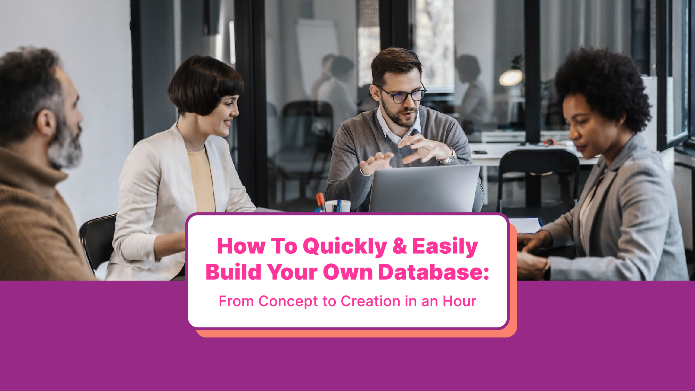

understanding how to create an online database is essential, as databases play a pivotal role in our daily lives. From social media platforms to e-commerce websites, databases are the backbone of countless applications and systems.
That is why understanding the importance of databases is crucial for anyone involved in technology, business, or decision-making roles. This article will provide a comprehensive overview of database design, its significance for your business, and guide you on how to create an online database. Let’s start with the basics.
https://www.youtube.com/watch?v=PauM0ZEWjv4
A database is an organized collection of data structured in a way that allows efficient storage, retrieval, and manipulation of information. With adequate database design, businesses can:
So, it really is a tool that you can implement into your business that could drive your growth. But to better understand what a database is and learn how to create an online database effectively, you will also need to understand the basic concepts that come with designing a killer database. So let’s get into further detail.
There are multiple elements that come with database design. However there are three key elements that you must get familiarized with. Here is a breakdown of those four elements and their purposes in the process of designing and creating an online database.
Now that you understand what a database is and the basic concepts, you can determine if a database would be an asset to organizing your data. And when it comes down to creating it, there are two approaches you could take. So let’s get into them so you can decide which best fits your needs.
When it comes to database design, two primary approaches dominate the industry: relational databases and non-relational databases. Let’s break down what each of the approaches are about and some of their pros and cons.
Though, neither of these design principles may be necessary given that we are in the 21st century and no-code online database builders are extremely common. If you aren’t interested in designing from scratch, then let’s take a look at what no-code can do for your business.
No-code online database platforms, like Knack, Airtable or Bubble, provide a user-friendly environment for creating and managing databases without the need for any coding expertise.
This empowers individuals and small businesses to create online databases quickly and effortlessly. And there are a lot of benefits to using no-code, but here are the main ones:
From their user-friendly interface to their automation capabilities and integrations, these platforms empower individuals and small businesses to create and manage powerful databases without the need for coding expertise.
Whether you’re a solo entrepreneur or part of a team, a no-code online database can revolutionize the way you handle data and streamline your workflows. But Let’s get into the actual process of creating an online database from start to finish, so you also take it into consideration.
Before diving into database design, proper planning is crucial to ensuring a solid foundation as this phase lays the groundwork for the logical and physical design stages. Here is a quick rundown of what goes down during the stage of conceptual design.
Stakeholders, including end-users, managers, IT professionals, and database designers must first gather the requirements for the database including entities, attributes, and relationships. This information serves as a blueprint for the subsequent stages of the database design process.
Identifying key entities is a critical step in the conceptual design process. Entities can be:
By identifying these entities, the database designer can determine the necessary attributes to include in the database schema.
Defining relationships between entities is another crucial aspect of conceptual design. Relationships can be one-to-one, one-to-many, or many-to-many, depending on the nature of the entities involved. These relationships help establish the structure and integrity of the database.
The last step is to create an entity-relationship diagram which provides a visual representation of the database’s structure, making it easier to understand and communicate. It showcases the entities as rectangles, attributes as ovals, and relationships as lines connecting the entities.
During the collaboration between stakeholders and database designers, the ERD may undergo several iterations to refine and finalize the design. Feedback and input from all parties involved are crucial to ensuring that the database meets the requirements and expectations of the end-users.
By investing time and effort into the conceptual design stage, you can lay a solid foundation for the subsequent stages of database design. As the next step, the logical design, will heavily depend on the end result of the conceptual design.
The logical design phase is where the conceptual model transforms into a fully defined structure. It involves translating the ERD into a formal representation of tables, fields, keys, and relationships. Here is how to go about your logical design:
Data normalization is a vital aspect of database design that eliminates redundancy and minimizes data anomalies.The data normalization process involves organizing data into multiple tables, each serving a specific purpose. By reducing redundancy and ensuring that each table stores only relevant data, normalization helps to prevent data inconsistencies and anomalies.
During the logical design phase, designers meticulously analyze the entities and attributes identified in the conceptual model and determine which entities will become tables and which attributes will become fields within those tables, as well as establishing the relationships between them.
The next step is a careful consideration of the cardinality and participation constraints identified in the conceptual model. By accurately representing these constraints, designers ensure that the database can effectively store and retrieve data in a meaningful way.
Another important aspect of logical design is the identification and definition of primary and foreign keys. Primary keys uniquely identify each record in a table, while foreign keys establish relationships between tables.
During the logical design phase, designers also consider performance optimization. They analyze the expected volume of data, the types of queries that will be executed, and the relationships between tables to design an efficient database structure.
The logical design phase is a crucial step in the database design process. By carefully crafting a logical design, database designers lay the foundation for a robust and efficient database system. They will then be ready to move onto the implementation.
Once the logical design is complete, the focus shifts to the physical design of the database. The physical design involves determining how the data will be stored, indexed, and accessed. These are the steps of the physical design phase:
But now that you know the exact steps to take in order to design a killer database, the question arises: what do you use to design and implement a stellar database? There are really two routes you can take; the quick and dirty one, or the quick and smart one.
In some scenarios, a quick and dirty solution like Google Sheets or Excel, is sufficient for creating a simple database. Users can:
While these platforms lack the comprehensive features and scalability of traditional databases, they can serve as effective solutions for projects with limited requirements. So let’s take a closer look at how they can be used for database design.
Both Google Sheets and Excel provide the ability to create tables which allows users to organize their data into rows and columns, making it easier to manage and analyze. Tables can also be customized with different formatting options to enhance readability and clarity.
In order to store data effectively, it is important to define fields within the tables. For example, if you are designing a customer database, fields could include name, address, email, and phone number. Users can specify the data type for each field to ensure data consistency and accuracy.
While Google Sheets and Excel Collaboration Docs may not have the same level of functionality as dedicated database management systems, it is still possible to establish basic relationships between tables. This can be done by linking related fields in different tables, allowing users to retrieve and analyze data from multiple tables simultaneously.
Google Sheets or an Excel Collaboration Doc for database design offers the ability to collaborate with others in real-time. Multiple users can work on the same document simultaneously, making it easier to:
This collaborative feature is especially beneficial for small-scale projects where team members need to coordinate their efforts.
While Google Sheets and Excel Collaboration Doc may not offer advanced data analysis capabilities, they do provide basic functions and formulas that can be used to perform calculations and generate insights. Users can leverage these features to analyze their data and make informed decisions based on the results.
Google Sheets and Excel Collaboration Docs can be valuable tools for quick and dirty database design. However, it is important to note that these platforms may not be suitable for large-scale projects or those requiring complex data management. So let’s look at the quick and smart way to design a database.
Below is a step-by-step guide on how to create an online database easily with Knack’s pre-built templates and customizable web applications:
Knack’s templates are designed to suit different industries, such as:
These templates serve as a great starting point for users who want to quickly set up a database without having to start from scratch. By using a template that aligns with their industry, users can save time and effort when designing the initial structure of their database.
Furthermore, these templates come with pre-defined fields and layouts that are relevant to each industry. You can fill these out and decide which to choose for your database which will also save you time and effort.
For example, the real estate template may include fields for property details, listing status, and contact information, while the healthcare template may include fields for patient records, medical history, and appointment scheduling.
Whether it’s adding custom fields, creating new relationships between tables, or rearranging the layout of data entry forms, Knack’s user-friendly interface makes it easy for users to tailor the template to their liking. But Let’s get into the actual process of creating an online database from start to finish, so you also take it into consideration
So, if you don’t find a pre-built template that fits your company’s needs, you can choose a close option and fix it to your liking. The best part is that this will take you less time then building a database from scratch.
Knack allows multiple users to work on the same database simultaneously, making it convenient for teams to collaborate and make real-time updates. This ensures that everyone is on the same page and reduces the risk of data inconsistencies.
You will have to assign collaboration protocols to your team members and provide proper training, but this will save your team a lot of confusion in the long haul. So, make sure that every single stakeholder that needs to access the database is informed on these protocols.
Knack’s templates and web apps are designed to be mobile-responsive which means that the databases can be accessed and used on various devices, including smartphones and tablets. This flexibility allows users to manage their data and applications on the go, increasing productivity and efficiency.
Be sure to check the mobile-responsiveness so that this feature isn’t wasted. With collaborative features and mobile responsiveness, Knack empowers users to create professional and streamlined databases that enhance productivity and efficiency.
Once your database is created, there are a few steps you need to take to ensure that it’s running up to date. So let’s get into a bit more detail.
After implementing the database, it is vital to consider maintenance. Here are a few tips to implement before going live and ensuring that it’s working correctly.
With these tips in mind you will be ready to create, implement and maintain a killer database. This will help you not only organize and store your data in a more efficient manner, but also help you drive your growth.
The importance of databases cannot be overstated in today’s data-driven world. Understanding how to design and create an online database is crucial for businesses looking to manage and leverage their data efficiently. This also leads to improved decision-making, streamlined processes, and a competitive edge.
Understanding the fundamental concepts of database design, such as relational and non-relational models, and leveraging modern tools like no-code online databases or specialized platforms like Knack empowers individuals and organizations to create robust and scalable data storage solutions.
By following a systematic approach, from conceptual design to physical implementation and ongoing optimization, businesses can harness the power of databases and unlock the full potential of their data assets. If you’re needing help building your own database, use our no-code online app library template library to find a huge selection of options and get a free trial so you know it’s the right fit.